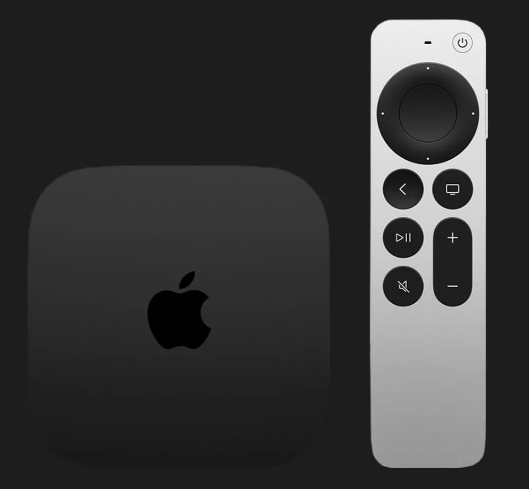
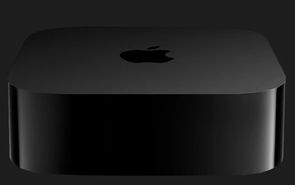
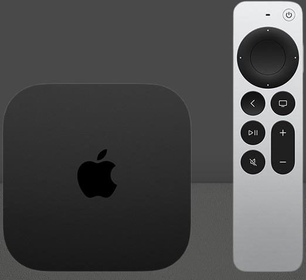
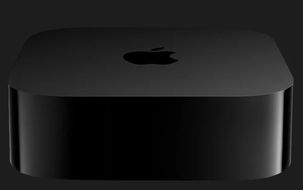
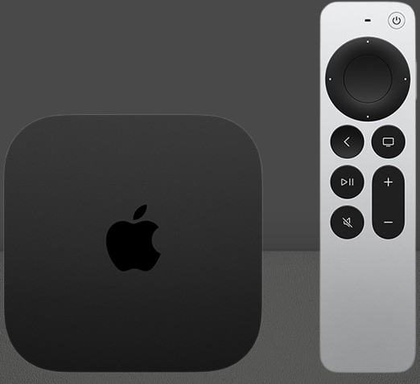

1. Processor Apple A15 Bionic
2. Storage –64 ГБ
8.000 грн
 



Apple TV 4K (2022, MN873) — компактна медіаприставка з чіпом A15 Bionic, 64 ГБ пам’яті, підтримкою 4K HDR, Dolby Vision, Dolby Atmos та Wi‑Fi 6. Оснащена пультом Siri Remote, працює на tvOS, ідеально інтегрується з іншими пристроями Apple. Підходить для стримінгу, ігор та розваг.